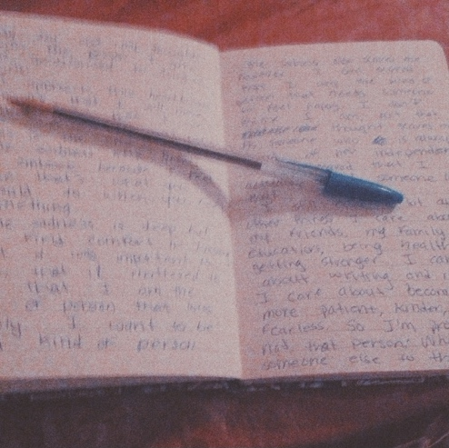
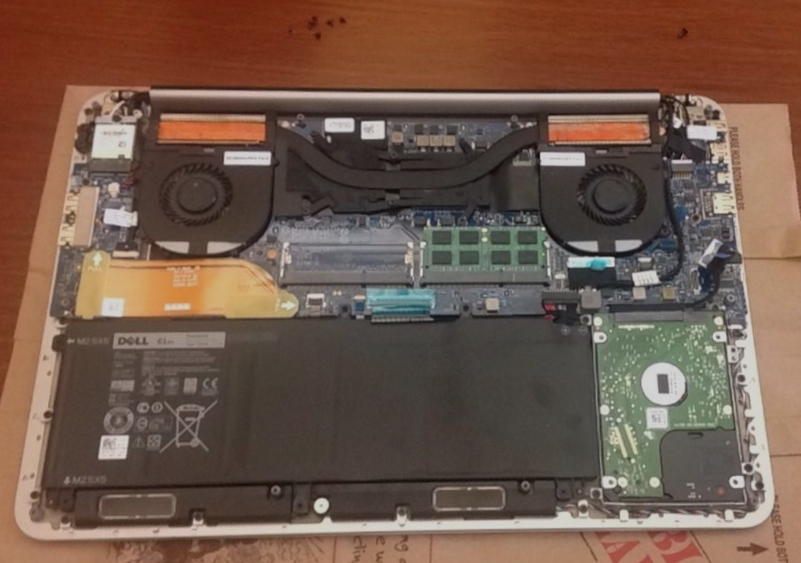
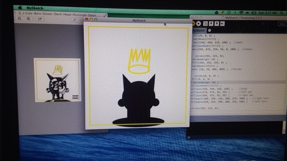
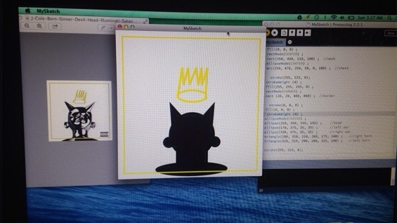

PROJECT 100
 
 

Introduction
Welcome! This summer I have set the goal of creating 100 mini coding projects. The project was inspired by Jennifer Dewalt's project which can be found here
Why?
I am embarking on this project to practice the coding skills I already have and to learn new skills. Further more, I believe this project will build my confidence in my coding ability and challenge me to stretch my creativity, which I belive is just as essential to coding.Eating in the Student Center is a pleasant experience. First the food is excellent. It is well prepared, it tastes delicious, and there are many different kinds of food like hamburgers, tacos, pizza, and chicken. Moreover, each person serves his or herself, selecting just what he or she wants. Second, the environment in the Student Center is positive. Many happy young people are talking and laughing. However, the atmosphere is still calm; it’s possible to study and do homework. Finally, there are many friendly people in the Student Center. Even the strangers say, “Hi!” and offer to share their tables. When that happens, practice in speaking English and friendship often follow. For these reasons, it is nice to go to the student center cafeteria once in a while to enjoy the eating, studying, and talking with new people.glwhrgkjr fbkewgbkjwrbgkjbrwkjglbwrjlbgkjbrwgbwrlgwhgilhnw4il3gnlwbeglb4ewkgjlbwljebglwrebgilb3rgo kjbewgkjb43jg bw34ghjlrwhngljkhnrwlkgnlwrng ljrwebngljbrejlgbeljrbglkernlgknlk ngi34 gjl4beglbreklgjberjlger rkbg jkrebgrlew g;kjelgkfn4wlenglernglkn42wihgflw4ihgnlerwkjgnjlblrejwbnglre ihgnrewgljkbehrl gjbrlejgbjlgbrklwegnjlknw wejgkblebfwbgnskjsdaghjowirbgs.jgoihwgkblsdghwighbsgds;joibgsd;hgjowbldsjfogiwehgnsdlugwobFLEGJOW BgrgkwebFLDOSFOUEWBfdshgowgbf ewdfhjbowlrgujwels,fnopesdhetbsd;gus;FSUFNS;IRBA;OUFBA;OUFGBSFJPYBKSFHLWSGRHW;owehglernglsahtiuwbtf wefkjesguerghlejr
I am embarking on this project to practice the coding skills I already have and to learn new skills. Further more, I believe this project will build my confidence in my coding ability and challenge me to stretch my creativity, which I belive is just as essential to coding.Eating in the Student Center is a pleasant experience. First the food is excellent. It is well prepared, it tastes delicious, and there are many different kinds of food like hamburgers, tacos, pizza, and chicken. Moreover, each person serves his or herself, selecting just what he or she wants. Second, the environment in the Student Center is positive. Many happy young people are talking and laughing. However, the atmosphere is still calm; it’s possible to study and do homework. Finally, there are many friendly people in the Student Center. Even the strangers say, “Hi!” and offer to share their tables. When that happens, practice in speaking English and friendship often follow. For these reasons, it is nice to go to the student center cafeteria once in a while to enjoy the eating, studying, and talking with new people.glwhrgkjr fbkewgbkjwrbgkjbrwkjglbwrjlbgkjbrwgbwrlgwhgilhnw4il3gnlwbeglb4ewkgjlbwljebglwrebgilb3rgo kjbewgkjb43jg bw34ghjlrwhngljkhnrwlkgnlwrng ljrwebngljbrejlgbeljrbglkernlgknlk ngi34 gjl4beglbreklgjberjlger rkbg jkrebgrlew g;kjelgkfn4wlenglernglkn42wihgflw4ihgnlerwkjgnjlblrejwbnglre ihgnrewgljkbehrl gjbrlejgbjlgbrklwegnjlknw wejgkblebfwbgnskjsdaghjowirbgs.jgoihwgkblsdghwighbsgds;joibgsd;hgjowbldsjfogiwehgnsdlugwobFLEGJOW BgrgkwebFLDOSFOUEWBfdshgowgbf ewdfhjbowlrgujwels,fnopesdhetbsd;gus;FSUFNS;IRBA;OUFBA;OUFGBSFJPYBKSFHLWSGRHW;owehglernglsahtiuwbtf wefkjesguerghlejr
I am embarking on this project to practice the coding skills I already have and to learn new skills. Further more, I believe this project will build my confidence in my coding ability and challenge me to stretch my creativity, which I belive is just as essential to coding.Eating in the Student Center is a pleasant experience. First the food is excellent. It is well prepared, it tastes delicious, and there are many different kinds of food like hamburgers, tacos, pizza, and chicken. Moreover, each person serves his or herself, selecting just what he or she wants. Second, the environment in the Student Center is positive. Many happy young people are talking and laughing. However, the atmosphere is still calm; it’s possible to study and do homework. Finally, there are many friendly people in the Student Center. Even the strangers say, “Hi!” and offer to share their tables. When that happens, practice in speaking English and friendship often follow. For these reasons, it is nice to go to the student center cafeteria once in a while to enjoy the eating, studying, and talking with new people.glwhrgkjr fbkewgbkjwrbgkjbrwkjglbwrjlbgkjbrwgbwrlgwhgilhnw4il3gnlwbeglb4ewkgjlbwljebglwrebgilb3rgo kjbewgkjb43jg bw34ghjlrwhngljkhnrwlkgnlwrng ljrwebngljbrejlgbeljrbglkernlgknlk ngi34 gjl4beglbreklgjberjlger rkbg jkrebgrlew g;kjelgkfn4wlenglernglkn42wihgflw4ihgnlerwkjgnjlblrejwbnglre ihgnrewgljkbehrl gjbrlejgbjlgbrklwegnjlknw wejgkblebfwbgnskjsdaghjowirbgs.jgoihwgkblsdghwighbsgds;joibgsd;hgjowbldsjfogiwehgnsdlugwobFLEGJOW BgrgkwebFLDOSFOUEWBfdshgowgbf ewdfhjbowlrgujwels,fnopesdhetbsd;gus;FSUFNS;IRBA;OUFBA;OUFGBSFJPYBKSFHLWSGRHW;owehglernglsahtiuwbtf wefkjesguerghlejr
Please feel free to check back on my progress.
Best, Franchesca.